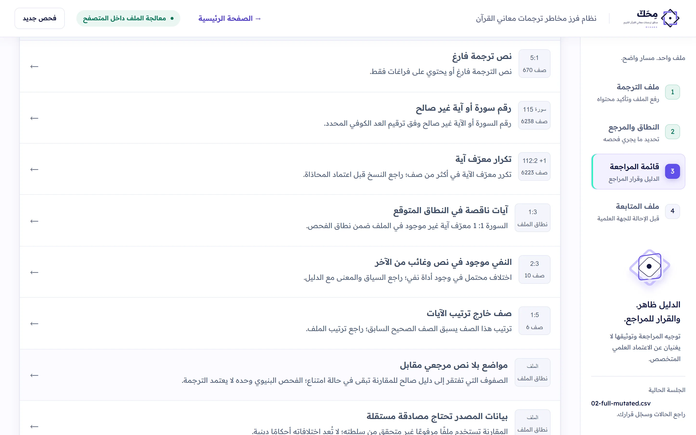
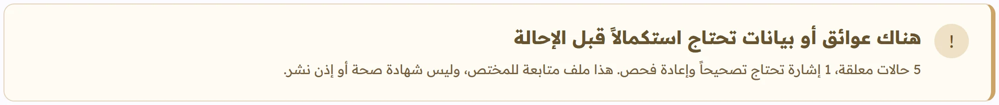

المسار
أربع خطوات، من الملف إلى ملف المتابعة.
1
ملف الترجمة
ارفع CSV أو Excel (XLSX) أو XML. تُقرأ الصفوف داخل متصفحك، وتراجع أولها قبل المتابعة.
2
النطاق والمرجع
حدّد هل الملف كامل أم جزئي، واختر مرجعاً تقارن به. حدود المصدر تبقى ظاهرة.
3
قائمة المراجعة
تُرتّب الحالات بالأولوية. تفتح الحالة، تقرأ النصين والدليل، وتسجّل قرارك مع السبب.
4
ملف المتابعة
سجل بما بقي مفتوحاً قبل الإحالة للجهة العلمية. ليس شهادة صحة ولا إذن نشر.


6,237 صفاً فُحصت نطاق كامل · 114 سورة 8 حالات · 5 بأولوية عالية ليس شهادة صحة ولا إذن نشر